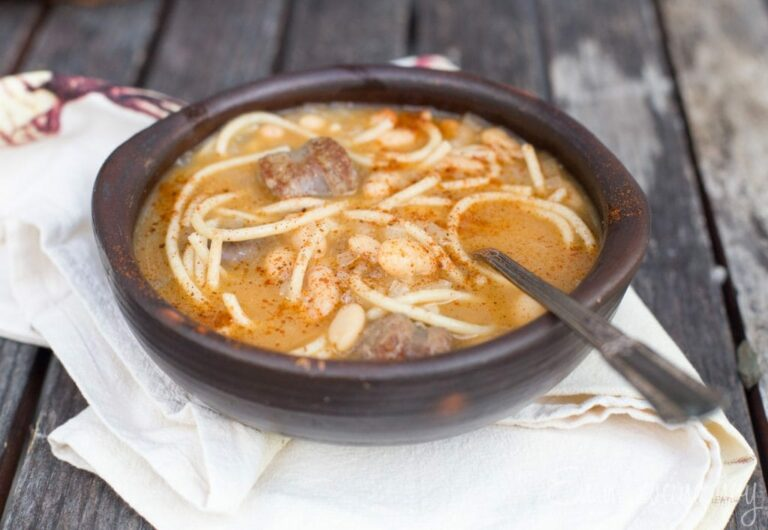

Receta Porotos Con Riendas
September is the independence of Chile month, and here in the US, it is also Hispanic Heritage Month since many
Caribbean and South American countries that were Spanish colonies also celebrate their independence during this month.
This dish is not part of the classic cuisine in the celebrations of Chilean Independence Day, but it is a very Chilean dish.
Tasty and substantial, coveted in winter, although in my family, we enjoy it year-round because it was a favorite of many.

Ingredients
- 2 Spanish chorizo sausages, sliced 1/2″ thick
- 2 cups of cooked white or pinto beans or 2 cans of great northern beans
- 1 cup of water or vegetable broth
- 1 cup cooked spaghetti
- 1/2 teaspoon sweet paprika
- 1/2 teaspoon Mexican oregano
- 1 bay leaf
- 2 cups cubed winter squash, optional
- 1/2 red bell pepper, diced small
- salt and pepper
Instructions
- In a saucepan over medium heat, heat 1 tablespoon oil. Add the sausage, cut into slices 1/2 inch thick, and saute for 4 minutes, stirring.
- Add the onion, chopped into small cubes, bell pepper, squash, oregano, paprika, salt, pepper, and bay leaf. Stir. Cook for 10 minutes until the onion begins to brown. Add water if too dry and sticking to the pan.
- Add the beans, do not drain if using canned, and a cup of water. Let warm up. Taste and adjust the seasoning.
- Add noodles, simmer a few minutes.
- Serve hot.